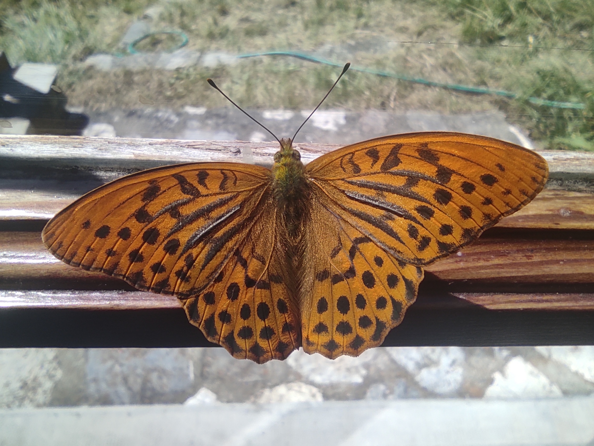
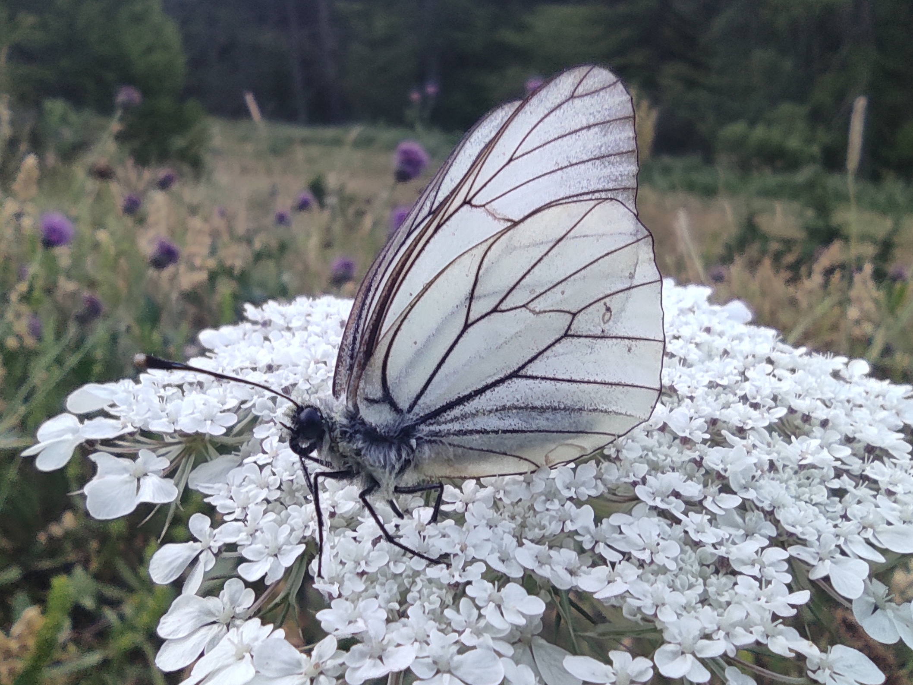
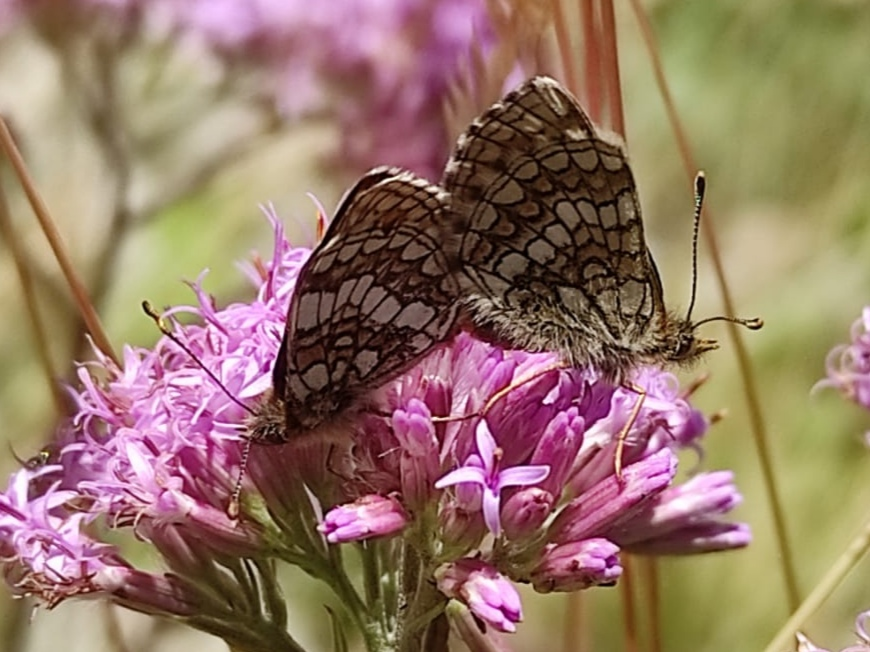
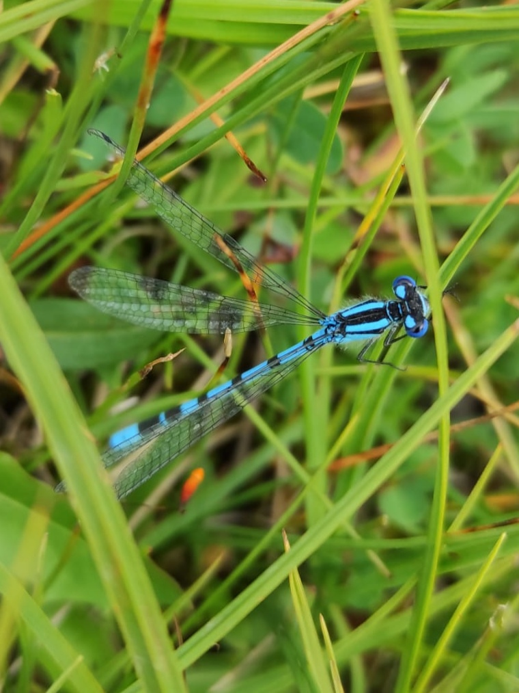
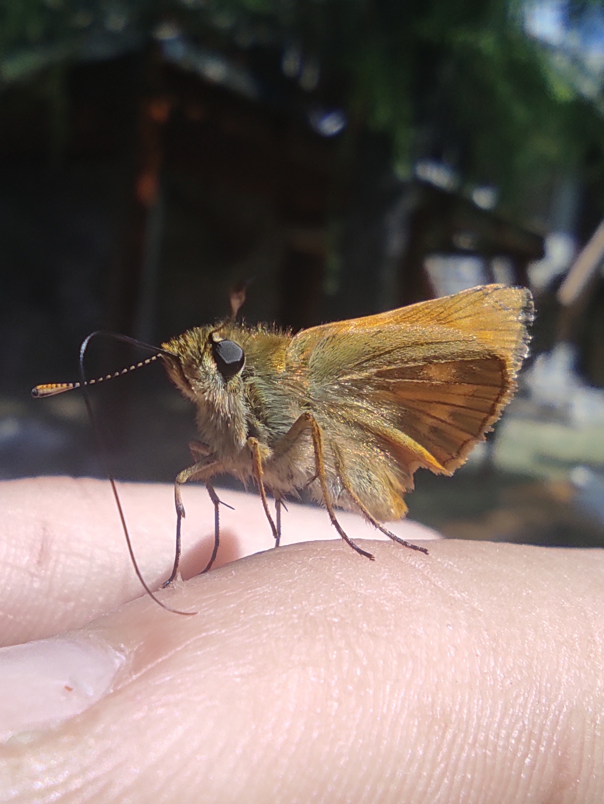
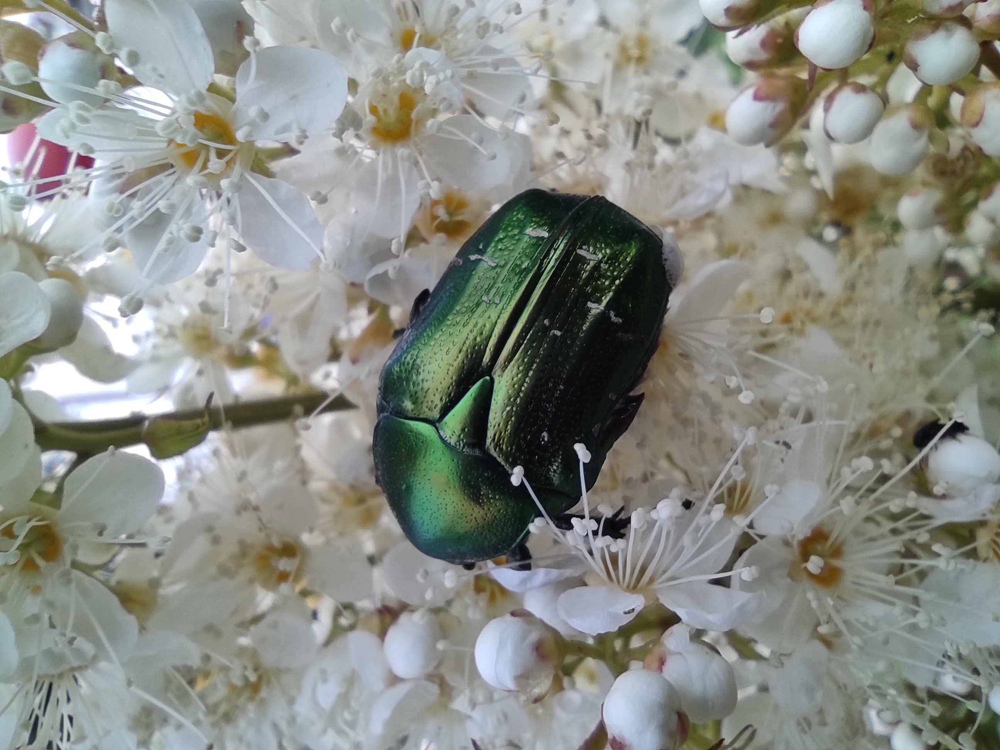

Macro photographie
- Depuis 3 ans
- Pratique : Annuelle
- Moi et la macro photographie en quelques mots :
- La macrophotographie est une technique de prise de vue rapprochée en photographie. Elle permet de capturer les moindres détails.
Chaque année, lorsque la chaleur arrive et que les insectes sortent, j'ai pris l'habitude de photographier les insectes (les papillons en particulier). J'aime chercher à les capturer numériquement et tenter de trouver le nom de leur espèce.
Mes photos :





